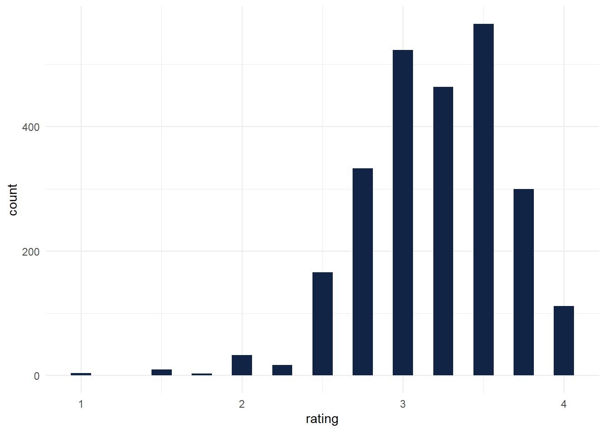
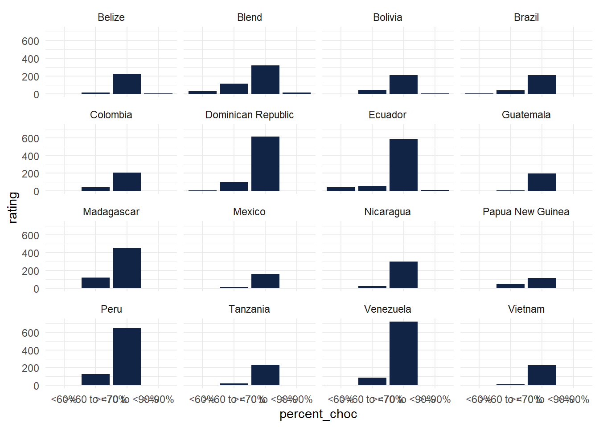
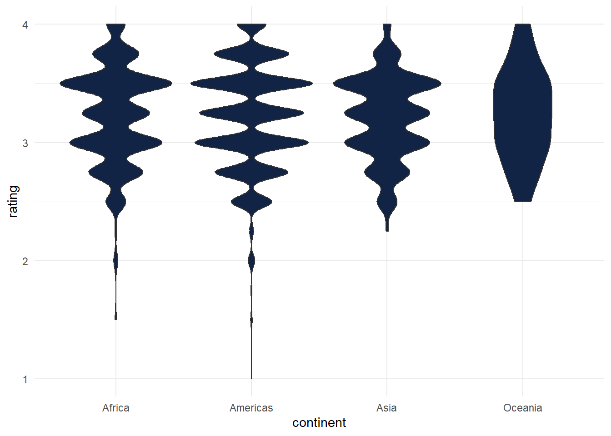
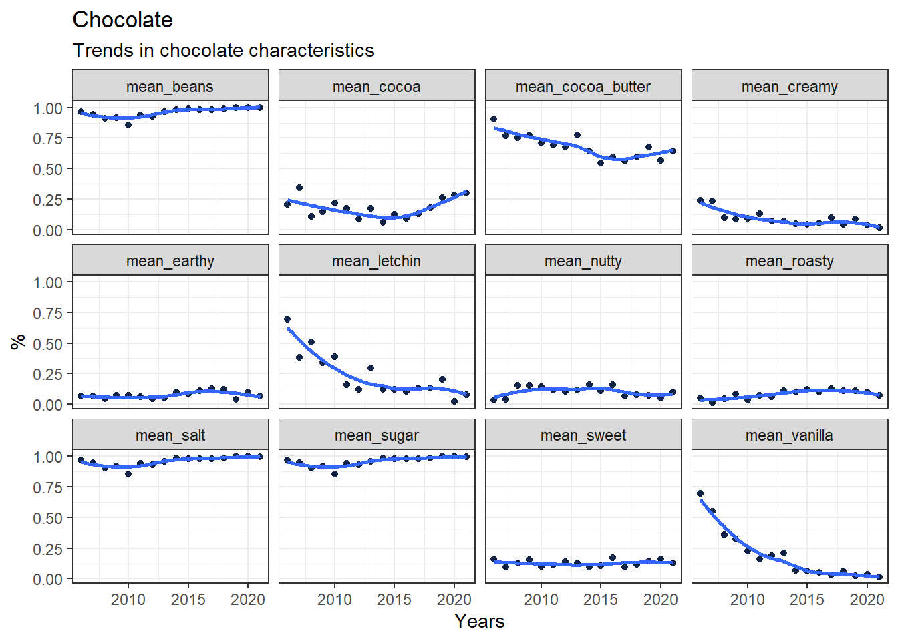
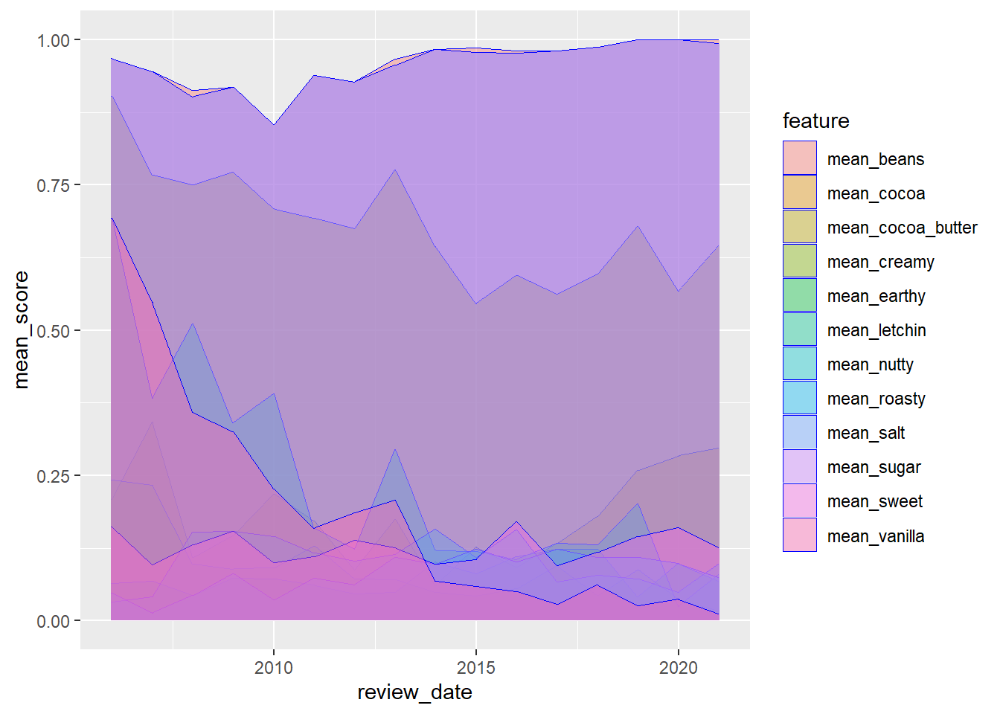
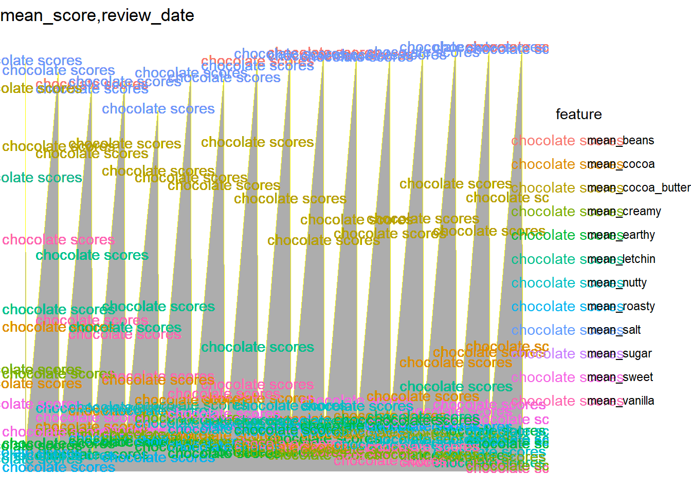
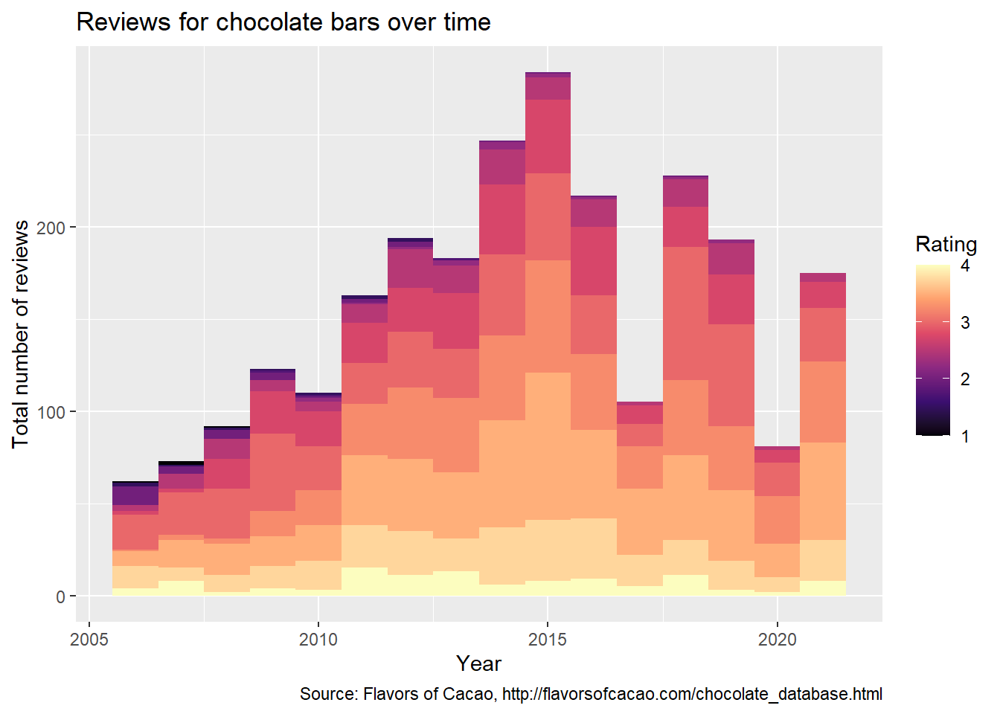

Downloading file 1 of 1: `chocolate.csv`project1
# A tibble: 2,530 × 10
ref company_manufacturer company_location review_date
<dbl> <chr> <chr> <dbl>
1 2454 5150 U.S.A. 2019
2 2458 5150 U.S.A. 2019
3 2454 5150 U.S.A. 2019
4 2542 5150 U.S.A. 2021
5 2546 5150 U.S.A. 2021
6 2546 5150 U.S.A. 2021
7 2542 5150 U.S.A. 2021
8 797 A. Morin France 2012
9 797 A. Morin France 2012
10 1011 A. Morin France 2013
# ℹ 2,520 more rows
# ℹ 6 more variables: country_of_bean_origin <chr>,
# specific_bean_origin_or_bar_name <chr>, cocoa_percent <chr>,
# ingredients <chr>, most_memorable_characteristics <chr>, rating <dbl>- Make a histogram of the rating scores to visualize the overall distribution of scores. Change the number of bins from the default to 10, 15, 20, and 25. Pick on the one that you think looks the best. Explain what the difference is when you change the number of bins and explain why you picked the one you did.
ggplot(chocolate) +
aes(x = rating) +
geom_histogram(bins = 25L, fill = "#112446") +
theme_minimal()
Bin size affects the density of the lines on the x axis. I changed the size of the bins to a visually pleasing one that maintained distinctions between ratings.
- Consider the countries where the beans originated from. How many reviews come from each country of bean origin?
origin<-select(chocolate, country_of_bean_origin,rating) chocolate.o <- group_by(origin,country_of_bean_origin)chocolate.o %>% group_by(country_of_bean_origin) %>% count()# A tibble: 62 × 2
# Groups: country_of_bean_origin [62]
country_of_bean_origin n
<chr> <int>
1 Australia 3
2 Belize 76
3 Blend 156
4 Bolivia 80
5 Brazil 78
6 Burma 1
7 Cameroon 3
8 China 1
9 Colombia 79
10 Congo 11
# ℹ 52 more rowsSee output
- What is average rating scores from reviews of chocolate bars that have Ecuador as country_of_bean_origin in this dataset? For this same set of reviews, also calculate (1) the total number of reviews and (2) the standard deviation of the rating scores. Your answer should be a new data frame with these three summary statistics in three columns. Label the name of these columns mean, sd, and total.
rating<-select(chocolate, country_of_bean_origin,rating)rating.ecuador <- filter(rating, country_of_bean_origin == "Ecuador")count(rating.ecuador)# A tibble: 1 × 1
n
<int>
1 219mean(rating.ecuador$rating)[1] 3.164384sd(rating.ecuador$rating)[1] 0.5122678summary.ecuador<-tibble(
total = count(rating.ecuador),
mean = mean(rating.ecuador$rating),
sd = sd(rating.ecuador$rating)
)print(summary.ecuador)# A tibble: 1 × 3
total$n mean sd
<int> <dbl> <dbl>
1 219 3.16 0.512Which country makes the best chocolate (or has the highest ratings on average) with beans from Ecuador?
company.reviews<-select(chocolate, company_location,country_of_bean_origin,rating)company.ecuador<-filter(company.reviews, country_of_bean_origin == "Ecuador")location<-group_by(company.ecuador, company_location)summary<-summarize(location,
mean = mean(rating, na.rm= TRUE),
location = company_location,
origin = country_of_bean_origin)summary %>% arrange(desc(mean))# A tibble: 219 × 4
# Groups: company_location [25]
company_location mean location origin
<chr> <dbl> <chr> <chr>
1 Australia 3.81 Australia Ecuador
2 Australia 3.81 Australia Ecuador
3 Australia 3.81 Australia Ecuador
4 Australia 3.81 Australia Ecuador
5 Switzerland 3.75 Switzerland Ecuador
6 Switzerland 3.75 Switzerland Ecuador
7 New Zealand 3.62 New Zealand Ecuador
8 New Zealand 3.62 New Zealand Ecuador
9 Hungary 3.5 Hungary Ecuador
10 Hungary 3.5 Hungary Ecuador
# ℹ 209 more rowsAustralia
Calculate the average rating across all country of origins for beans. Which top 3 countries have the highest ratings on average?
origin %>%
group_by(country_of_bean_origin) %>%
summarize(mean = mean(rating, na.rm= TRUE))%>%
arrange(desc(mean))# A tibble: 62 × 2
country_of_bean_origin mean
<chr> <dbl>
1 Tobago 3.62
2 China 3.5
3 Sao Tome & Principe 3.5
4 Solomon Islands 3.45
5 Congo 3.32
6 Thailand 3.3
7 Cuba 3.29
8 Vietnam 3.29
9 Papua New Guinea 3.28
10 Madagascar 3.27
# ℹ 52 more rowsTobago, China, Sao Tome & Principe.
Following up on the previous problem, now remove any countries of bean origins that have less than 10 chocolate bar reviews. Now, which top 3 countries have the highest ratings on average?
more_reviews<-chocolate %>%
group_by(country_of_bean_origin) %>%
count(rating) %>%
filter(n>10)more_reviews %>%
group_by(country_of_bean_origin) %>%
summarize(mean = mean(rating, na.rm= TRUE)) %>%
arrange(desc(mean))# A tibble: 20 × 2
country_of_bean_origin mean
<chr> <dbl>
1 Ghana 3.5
2 Trinidad 3.5
3 Madagascar 3.38
4 Belize 3.25
5 Brazil 3.25
6 Guatemala 3.25
7 Nicaragua 3.25
8 Papua New Guinea 3.25
9 Peru 3.25
10 Tanzania 3.25
11 Venezuela 3.25
12 Vietnam 3.25
13 Colombia 3.12
14 Dominican Republic 3.12
15 Ecuador 3.12
16 Mexico 3.12
17 Blend 3.04
18 Bolivia 3
19 Costa Rica 3
20 India 3 For this last part, let’s explore the relationship between percent chocolate and ratings.
Identify the countries of bean origin with at least 50 reviews. Remove reviews from countries are not in this list.
more_than_50<-group_by(chocolate, country_of_bean_origin) %>%
count(country_of_bean_origin)%>%
filter(n>=50)Using the variable describing the chocolate percentage for each review, create a new column that groups chocolate percentages into one of four groups: (i) <60%, (ii) >=60 to <70%, (iii) >=70 to <90%, and (iii) >=90%
(Hint check out the substr() function in base R and the case_when() function from dplyr – see example below).
by_percent<-chocolate %>% filter(country_of_bean_origin %in% c("Belize","Blend","Bolivia","Brazil","Colombia","Dominican Republic", "Ecuador","Guatemala","Madagascar","Mexico","Nicaragua","Papua New Guinea","Peru","Tanzania","Venezuela","Vietnam"))%>%
mutate(percent_choc = case_when(
cocoa_percent >= 90 ~ ">=90%",
cocoa_percent >= 70 & cocoa_percent <90 ~ ">=70 to <90%",
cocoa_percent >= 60 & cocoa_percent <70 ~ ">=60 to <70%",
cocoa_percent < 60 ~ "<60%"
))Using the new column described in #2, re-order the factor levels (if needed) to be starting with the smallest percentage group and increasing to the largest percentage group
(Hint check out the fct_relevel() function from forcats).
by_percent$percent_choc <- factor(by_percent$percent_choc,
levels = c("<60%", ">=60 to <70%", ">=70 to <90%", ">=90%"))For each country, make a set of four side-by-side boxplots plotting the groups on the x-axis and the ratings on the y-axis. These plots should be faceted by country.
ggplot(by_percent) +
aes(x = percent_choc, y = rating) +
geom_col(fill = "#112446") +
theme_minimal() +
facet_wrap(vars(country_of_bean_origin))
(by_percent)# A tibble: 2,007 × 11
ref company_manufacturer company_location review_date
<dbl> <chr> <chr> <dbl>
1 2454 5150 U.S.A. 2019
2 2458 5150 U.S.A. 2019
3 2454 5150 U.S.A. 2019
4 2546 5150 U.S.A. 2021
5 797 A. Morin France 2012
6 797 A. Morin France 2012
7 1015 A. Morin France 2013
8 1011 A. Morin France 2013
9 1011 A. Morin France 2013
10 1015 A. Morin France 2013
# ℹ 1,997 more rows
# ℹ 7 more variables: country_of_bean_origin <chr>,
# specific_bean_origin_or_bar_name <chr>, cocoa_percent <chr>,
# ingredients <chr>, most_memorable_characteristics <chr>, rating <dbl>,
# percent_choc <fct>On average, which category of chocolate percentage is most highly rated? Do these countries mostly agree or are there disagreements?
There is universally high ratings for chocolate with cocoa percent >=70 to <90%.
Part 2: Join two datasets together
The goal of this part of the assignment is to join two datasets together. gapminder is a R package that contains an excerpt from the Gapminder data.
Use this dataset it to create a new column called continent in our chocolate dataset that contains the continent name for each review where the country of bean origin is.
library(gapminder)gapminder<-gapminderOnly keep reviews that have reviews from countries of bean origin with at least 10 reviews.
more_than_10<-group_by(chocolate, country_of_bean_origin) %>%
count(country_of_bean_origin)%>%
filter(n>=10)merged<-left_join(more_than_10, gapminder, by=c('country_of_bean_origin' = 'country'))more10<- chocolate %>%
filter(country_of_bean_origin %in% more_than_10$country_of_bean_origin) %>% left_join(gapminder, by=c('country_of_bean_origin' = 'country'))Also, remove the country of bean origin named “Blend”.
no_blend<-more10 %>%
filter(country_of_bean_origin != "Blend")no_blend_na<- no_blend %>%
filter(is.na(continent))Hint:Check to see if there are any NAs in the new column. If there are any NAs, add the continent name for each row.
no_blend$continent[which(no_blend$country_of_bean_origin == "Belize")] <- "Americas"
no_blend$continent[which(no_blend$country_of_bean_origin == "Congo")] <- "Africa"
no_blend$continent[which(no_blend$country_of_bean_origin == "Fiji")] <- "Oceania"
no_blend$continent[which(no_blend$country_of_bean_origin == "Grenada")] <- "Americas"
no_blend$continent[which(no_blend$country_of_bean_origin == "Papua New Guinea")] <- "Oceania"
no_blend$continent[which(no_blend$country_of_bean_origin == "Sao Tome")] <- "Africa"
no_blend$continent[which(no_blend$country_of_bean_origin == "Solomon Islands")] <- "Oceania"
no_blend$continent[which(no_blend$country_of_bean_origin == "St. Lucia")] <- "Americas"
no_blend$continent[which(no_blend$country_of_bean_origin == "Trinidad")] <- "Americas"
no_blend$continent[which(no_blend$country_of_bean_origin == "U.S.A.")] <- "Americas"
no_blend$continent[which(no_blend$country_of_bean_origin == "Vanuatu")] <- "Oceania"Make a set of violin plots with ratings on the y-axis and continents on the x-axis.
ggplot(no_blend) +
aes(x = continent, y = rating) +
geom_violin(adjust = 1L, scale = "area", fill = "#112446") +
theme_minimal()
Part 3: Convert wide data into long data The goal of this part of the assignment is to take a dataset that is either messy or simply not tidy and to make them tidy datasets. The objective is to gain some familiarity with the functions in the dplyr, tidyr packages. You may find it helpful to review the section on spreading and gathering data.
Tasks We are going to create a set of features for us to plot over time. Use the functions in dplyr and tidyr to perform the following steps to the chocolate dataset:
Create a new set of columns titled beans, sugar, cocoa_butter, vanilla, letchin, and salt that contain a 1 or 0 representing whether or not that review for the chocolate bar contained that ingredient (1) or not (0).
chocolate <- chocolate %>%
mutate(beans = case_when(
str_detect(ingredients, fixed("B")) ~ 1,
TRUE ~ 0
))chocolate <- chocolate %>%
mutate(sugar = case_when(
str_detect(ingredients, fixed("S")) ~ 1,
TRUE ~ 0
))chocolate <- chocolate %>%
mutate(cocoa_butter = case_when(
str_detect(ingredients, fixed("C")) ~ 1,
TRUE ~ 0
))chocolate <- chocolate %>%
mutate(vanilla = case_when(
str_detect(ingredients, fixed("V")) ~ 1,
TRUE ~ 0
))chocolate <- chocolate %>%
mutate(letchin = case_when(
str_detect(ingredients, fixed("L")) ~ 1,
TRUE ~ 0
))chocolate <- chocolate %>%
mutate(salt = case_when(
str_detect(ingredients, fixed("S")) ~ 1,
TRUE ~ 0
))Create a new set of columns titled char_cocoa, char_sweet, char_nutty, char_creamy, char_roasty, char_earthy that contain a 1 or 0 representing whether or not that the most memorable characteristic for the chocolate bar had that word (1) or not (0). For example, if the word “sweet” appears in the most_memorable_characteristics, then record a 1, otherwise a 0 for that review in the char_sweet column (Hint: check out str_detect() from the stringr package).
chocolate <- chocolate %>%
mutate(char_cocoa = case_when(
str_detect(most_memorable_characteristics, fixed("cocoa")) ~ 1,
TRUE ~ 0
))chocolate <- chocolate %>%
mutate(char_sweet = case_when(
str_detect(most_memorable_characteristics, fixed("sweet")) ~ 1,
TRUE ~ 0
))chocolate <- chocolate %>%
mutate(char_nutty = case_when(
str_detect(most_memorable_characteristics, fixed("nutty")) ~ 1,
TRUE ~ 0
))chocolate <- chocolate %>%
mutate(char_creamy = case_when(
str_detect(most_memorable_characteristics, fixed("creamy")) ~ 1,
TRUE ~ 0
))chocolate <- chocolate %>%
mutate(char_roasty = case_when(
str_detect(most_memorable_characteristics, fixed("roasty")) ~ 1,
TRUE ~ 0
))chocolate <- chocolate %>%
mutate(char_earthy = case_when(
str_detect(most_memorable_characteristics, fixed("earthy")) ~ 1,
TRUE ~ 0
))For each year (i.e. review_date), calculate the mean value in each new column you created across all reviews for that year. (Hint: If all has gone well thus far, you should have a dataset with 16 rows and 13 columns).
new_chocolate <- chocolatenew_chocolate <-subset(new_chocolate, select = -c(company_manufacturer, company_location))new_chocolate <-subset(new_chocolate, select = -c(ref))new_chocolate <-subset(new_chocolate, select = -c(country_of_bean_origin))new_chocolate <-subset(new_chocolate, select = -c(specific_bean_origin_or_bar_name))new_chocolate <-subset(new_chocolate, select = -c(cocoa_percent))new_chocolate <-subset(new_chocolate, select = -c(ingredients))new_chocolate <-subset(new_chocolate, select = -c(most_memorable_characteristics))new_chocolate <-subset(new_chocolate, select = -c(rating))new_chocolate <- new_chocolate %>%
group_by(review_date) %>%
mutate(mean_beans = mean(beans, na.rm = TRUE))new_chocolate <- new_chocolate %>%
group_by(review_date) %>%
mutate(mean_sugar = mean(sugar, na.rm = TRUE))new_chocolate <- new_chocolate %>%
group_by(review_date) %>%
mutate(mean_cocoa_butter = mean(cocoa_butter, na.rm = TRUE))new_chocolate <- new_chocolate %>%
group_by(review_date) %>%
mutate(mean_vanilla = mean(vanilla, na.rm = TRUE))new_chocolate <- new_chocolate %>%
group_by(review_date) %>%
mutate(mean_letchin = mean(letchin, na.rm = TRUE))new_chocolate <- new_chocolate %>%
group_by(review_date) %>%
mutate(mean_salt = mean(salt, na.rm = TRUE))new_chocolate <- new_chocolate %>%
group_by(review_date) %>%
mutate(mean_cocoa = mean(char_cocoa, na.rm = TRUE))new_chocolate <- new_chocolate %>%
group_by(review_date) %>%
mutate(mean_sweet = mean(char_sweet, na.rm = TRUE))new_chocolate <- new_chocolate %>%
group_by(review_date) %>%
mutate(mean_nutty = mean(char_nutty, na.rm = TRUE))new_chocolate <- new_chocolate %>%
group_by(review_date) %>%
mutate(mean_creamy = mean(char_creamy, na.rm = TRUE))new_chocolate <- new_chocolate %>%
group_by(review_date) %>%
mutate(mean_roasty = mean(char_roasty, na.rm = TRUE))new_chocolate <- new_chocolate %>%
group_by(review_date) %>%
mutate(mean_earthy = mean(char_earthy, na.rm = TRUE))long_choc<-new_chocolate %>%select(review_date,mean_beans,mean_sugar,mean_cocoa_butter,mean_vanilla,mean_letchin,mean_salt,mean_cocoa,mean_sweet,mean_nutty,mean_creamy,mean_roasty,mean_earthy)Convert this wide dataset into a long dataset with a new feature and mean_score column.
long_chocolate <- long_choc %>%
pivot_longer(cols = c('mean_beans', 'mean_sugar', 'mean_cocoa_butter', 'mean_vanilla', 'mean_letchin', 'mean_salt', 'mean_cocoa', 'mean_sweet', 'mean_nutty', 'mean_creamy', 'mean_roasty', 'mean_earthy'),
names_to = "feature",
values_to = "mean_score")view(long_chocolate)Part 4: Data visualization In this part of the project, we will continue to work with our now tidy song dataset from the previous part.
Tasks Use the functions in ggplot2 package to make a scatter plot of the mean_scores (y-axis) over time (x-axis). One plot for each mean_score. For full credit, your plot should include:
An overall title for the plot and a subtitle summarizing key trends that you found. Also include a caption in the figure with your name.
Both the observed points for the mean_score, but also a smoothed non-linear pattern of the trend All plots should be shown in the one figure There should be an informative x-axis and y-axis label Consider playing around with the theme() function to make the figure shine, including playing with background colors, font, etc.
Notes You may need to use functions outside these packages to obtain this result.
Don’t worry about the ordering of the rows or columns. Depending on whether you use gather() or pivot_longer(), the order of your output may differ from what is printed above. As long as the result is a tidy data set, that is sufficient.
ggplot(long_chocolate) +
aes(x = review_date, y = mean_score) +
geom_point(shape = "circle", size = 1.5,
colour = "#112446") +
labs(x = "Years", y = "%", title = "Chocolate", subtitle = "Trends in chocolate characteristics") +
theme_bw() +
facet_wrap(vars(feature))+
stat_smooth(method = "loess",
formula = y ~ x,
geom = "smooth")
This is an additional geom_area plot I thought looked nice.
ggplot(long_chocolate, aes(x = review_date, y = mean_score)) +
geom_area(aes(fill = feature), position = "identity", colour = "blue", size = .2, alpha = .4)
Part 5: Make the worst plot you can! This sounds a bit crazy I know, but I want this to try and be FUN! Instead of trying to make a “good” plot, I want you to explore your creative side and make a really awful data visualization in every way. :)
Tasks Using the chocolate dataset (or any of the modified versions you made throughout this assignment or anything else you wish you build upon it):
Make the absolute worst plot that you can. You need to customize it in at least 7 ways to make it awful. In your document, write 1 - 2 sentences about each different customization you added (using bullets – i.e. there should be at least 7 bullet points each with 1-2 sentences), and how it could be useful for you when you want to make an awesome data visualization.
chocolate_title <- "mean_score,review_date"
ggplot(long_chocolate, aes(x = review_date, y = mean_score, color=feature)) +
geom_area(position = "identity", colour = "yellow", size = .2, alpha = .4, show.legend=NA, stat = "align")+
geom_text(label="chocolate scores")+
ggtitle(chocolate_title)+
theme_void()
This is a bad plot for the following ways:
The individual characteristics are not represented on the graph making intepretation impossible
The color scheme is ugly and distracting
The scale is such that the variation between the years is very hard to determine
The label is not accurate and interferes with viewing
The theme eliminates the scales making interpretation impossible.
The title is not centered and not useful
7.The legend is illegible
Part 6: Make my plot a better plot! The goal is to take my sad looking plot and make it better! If you’d like an example, here is a tweet I came across of someone who gave a talk about how to zhoosh up your ggplots.
ggplot(chocolate) +
aes(x = review_date, fill = rating, group = rating) +
geom_histogram(bins = 16L) +
scale_fill_viridis_c(option = "magma", direction = 1) +
labs(
x = "Year",
y = "Total number of reviews",
caption = "Source: Flavors of Cacao, http://flavorsofcacao.com/chocolate_database.html",
fill = "Rating"
) +theme_update(plot.title = element_text(hjust = 0.5))+
ggtitle("Reviews for chocolate bars over time")
- I did not find the violin graph helpful so switched to a histogram. The score is represented in color with intensity according to number
- There is a useful title at the top
- The relative density of reviews is preserved and represented on the graph
- A caption is provided with source information.
- The X and Y axes are clearly labeled
- The bins are set to appropriate size to create visually appealing display
- The theme is minimal and does not distract from the data being represented.
Sources:
https://chat.openai.com/
https://www.rdocumentation.org
https://argoshare.is.ed.ac.uk
https://r-graph-gallery.com
https://environmentalcomputing.net
https://www.geeksforgeeks.org
https://ggplot2.tidyverse.org
https://community.rstudio.com
https://stackoverflow.com/
https://cran.r-project.org/web/packages/esquisse/index.html